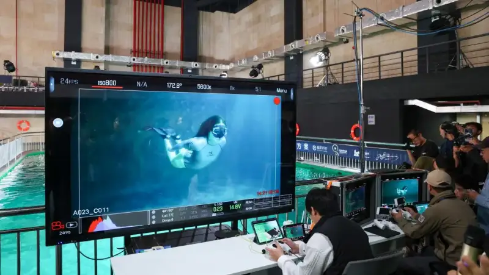
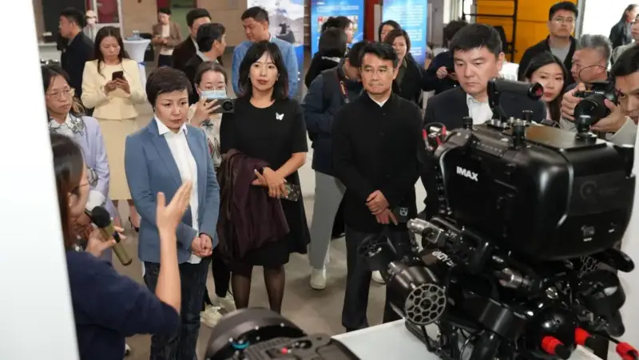
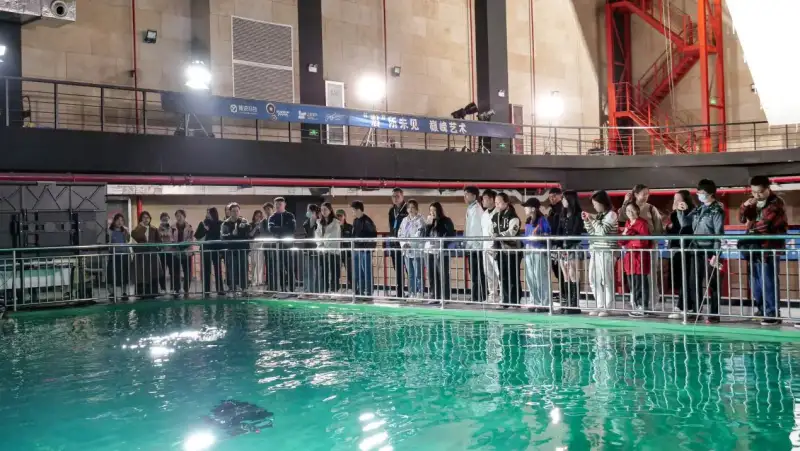
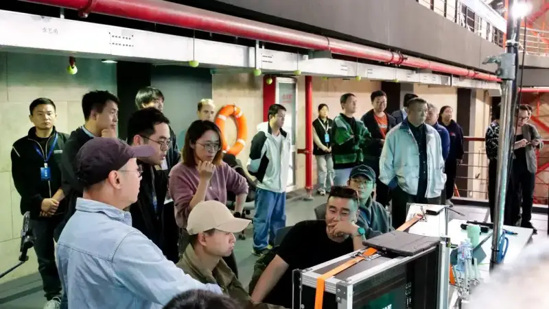
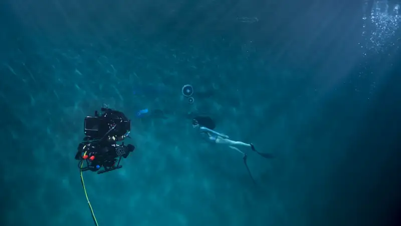

Recently, the 'First-of-its-kind Underwater Robot Solution for the Film and TV Industry: Deep Experience and Exchange Salon,' co-hosted by Qysea, Youji Film and TV, and Shanghai Film Production, was officially held at the Shanghai Film Haopu Smart Industry Community in Chedun Town, Songjiang District, Shanghai. As the core highlight of the event, Shenzhen Qysea Technology Co., Ltd., together with its partners Shanghai Youji Film and TV Equipment Co., Ltd. and Shanghai Film Production Co., Ltd., combined the 'world's first film-industry (cinema-grade) underwater robot solution + Shanghai's largest standardized underwater sound stage.' They brought a crafted underwater photography showcase for a group of government leaders, well-known film directors, producers, directors of photography, and film equipment suppliers.

On the day of the salonShanghai Songjiang District Standing Committee member and head of the Propaganda Department, Gu Jianbin,and Party Secretary and Chairman of Shanghai Film Group, Wang Jun, attended the event.

In the past, underwater shots in film usually fell into two methods, dry shooting and wet shooting. Wet shooting, that is, real underwater footage, dominated. It required the photographer to go into the water and shoot in person, and it often faced pain points such as limited freedom of movement with handheld gear, difficulty communicating with the director on shore, short shooting windows, and safety risks in the water. At the same time, the high combined cost of labor, time, and equipment for underwater shooting also kept film investors away, leaving underwater shooting stuck at a bottleneck. The cinema-grade underwater robot solution that Qysea showed on site, first, with its innovative, smart, convenient, efficient, safe, and reliable qualities, overturned the traditional way of working underwater and brought users an experience like no other. Second, it gives users customized choices for five application scenarios: film, promotional ads, documentaries, short videos, and live streaming.This cinema-grade underwater robot solution has already been used in the shooting and production of major theatrical films such as 'Operation Red Sea 2,' 'Jiangyuan Long,' and 'Dongji Island.'

Whether the robot can hover steadily and perform complex camera moves is the key focus of underwater shooting. On site, guests such as the chief director of photography for 'The Wandering Earth' series, Liu Yin; the drone director of 'Aerial China,' Zhang Ruixin; the director of photography for 'Go Away! Mr. Tumor,' Lin Zhijian; and the underwater photographer for 'Aquaman', Nathan FFrost, and other well-known guests from home and abroad, all put it to the test.

Qysea staff controlled the underwater robot and responded with ease. They successfully showed underwater moves such as an orbit shot, a simulated jib, a simulated dolly track, and an Inception-style spin. Its strong performance won high praise from the industry guests and leaders on site.On one hand, the underwater robot shown here was the first to carry Qysea's self-developed Q-DVL sonar anti-current hover module, previously used only in marine engineering. Its hover precision reaches the centimeter level, allowing long, fixed shooting at any depth and angle underwater. Based on AI algorithms+ plus the sonar module, the combined software-and-hardware model lets the robot adapt and resist currents on its own even in fast water. This raises the stability of film shooting and also solves the safety issues that underwater photographers faced in the past.On the other hand, with Qysea's self-developed 6-degree-of-freedom vector high-power motor, the underwater robot allows 360-degree, full-attitude, no-blind-spot camera control, and it smoothly performs many complex camera moves, so users feel a cinema-grade precise control while shooting. It is worth noting that the underwater photographer for 'The Mermaid,' Lin Deming, who was on site, said in an interview: 'Right now this solution can already handle 70% percent of the work in general underwater film shooting.'

Shenzhen Qysea Technology Co., Ltd. was founded in 2016. It is a provider of underwater AI solutions for the global market., It gives customers productivity tools and system solutions for 0~ to 500 meters underwater, across a wide range of civilian industries.。 We are a national high-tech enterprise, a national-level specialized and sophisticated 'Little Giant,' and an ecosystem company of Xiaomi, as well as the sole underwater-AI partner of the Xiaomi Robotics Lab. We have already built key underwater technology barriers in marine engineering, emergency rescue, ecological monitoring, water conservancy and dam inspection, bridge inspection, and aquaculture.In the film and TV industry, from our earlier work on the CCTV documentaries 'Ten Years of Fishing Ban on the Yangtze' and 'Wanwu Shengdong,' and becoming the designatedAI AI underwater robot brand, to today's cinema-grade underwater robot solution used in the shooting and production of a number of theatrical films. All of this marks an important step for Qysea in technical innovation and industry positioning.In the future, Qysea will keep to its original goal of using underwater AI to expand the way people work and live. It will keep innovating in the film and TV industry, bring a camera language and creative freedom like no other, and open a whole new era of underwater shooting.